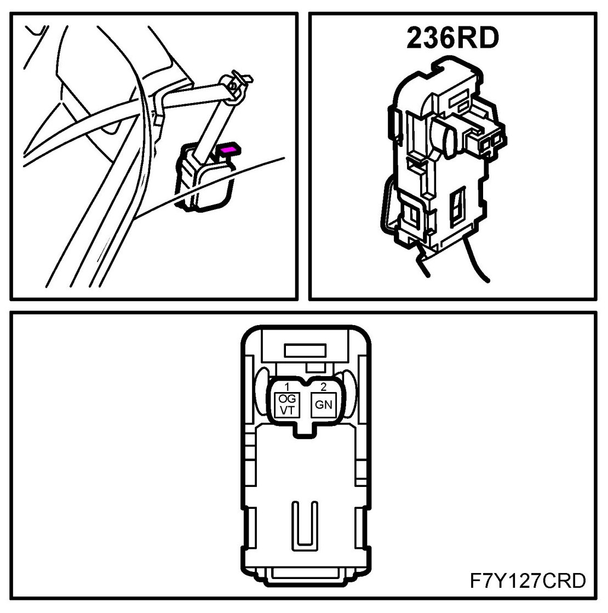

Operation CHARM
: Car repair manuals for everyone.
Home
>>
Saab
>>
2011
>>
9-3 FWD (9440) L4-2.0L Turbo
>>
Repair and Diagnosis
>>
Restraints and Safety Systems
>>
Seat Belt Systems
>>
Seat Belt Tensioner
>>
Locations
>>
Belt Tensioner, Rear Seat, Driver's Side (236RD)
Belt Tensioner, Rear Seat, Driver's Side (236RD)
Belt Tensioner, Rear Seat, Driver's Side (236RD)
Location: under the parcel shelf
